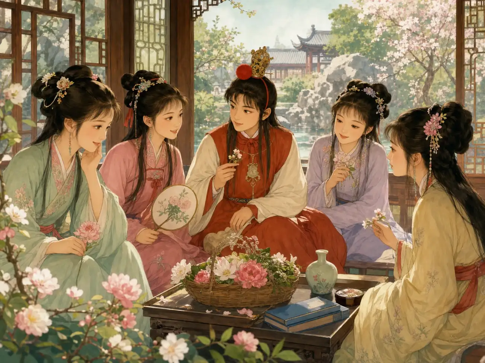
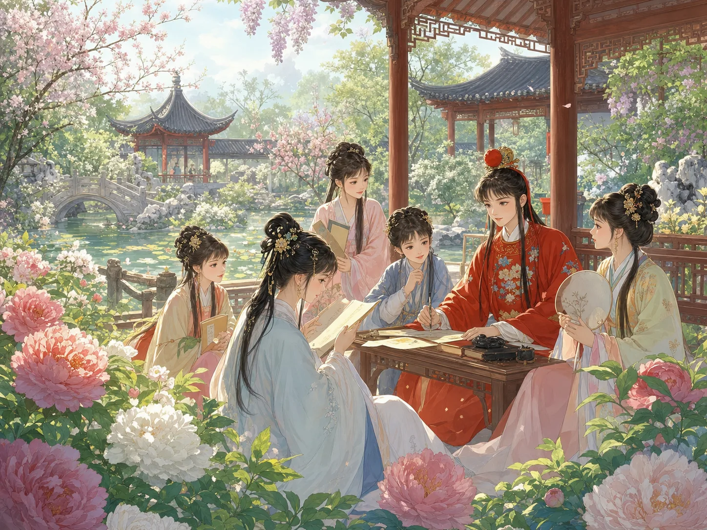
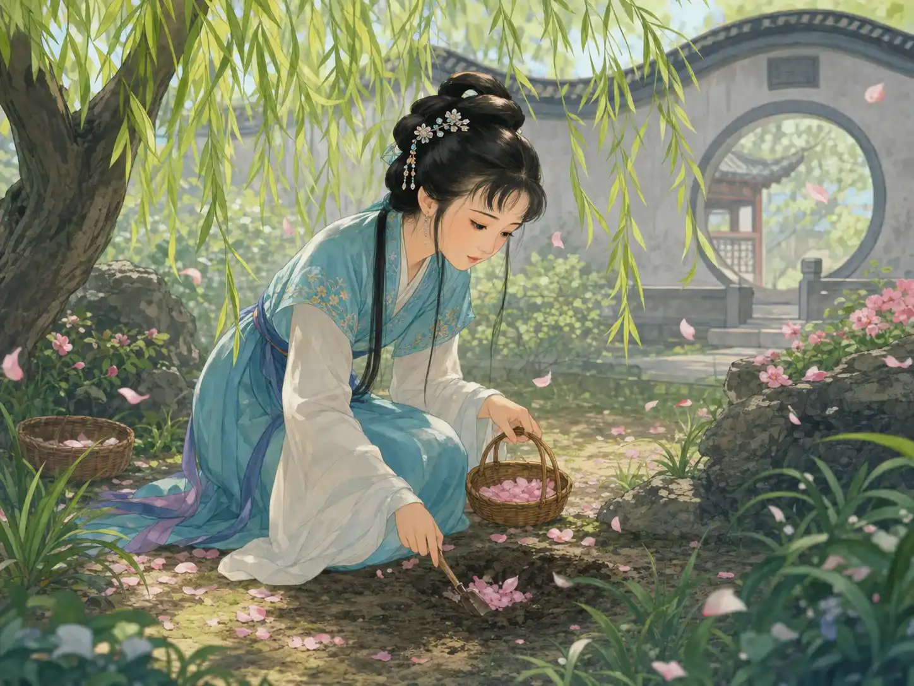

《红楼梦》：大观园里的世界
Dream of the Red Chamber: A World Inside Grand View Garden
Page 1
一块想看人间的石头，最后变成了贾宝玉嘴里的玉
A Stone That Wanted to See the Human World Became The unusual young main character of Dream of the Red Chamber, who loves poetry and beauty more than official success.'s Jade
Dream of the Red Chamber begins with a shell of myth: a magical stone that wants to visit the human world.
《红楼梦》一开头先不像普通的家族故事。它先讲一块石头。
这块石头本来是女娲补天剩下的一块，吸了很久很久的日月精华，慢慢有了灵性。它想去人间看一看，后来就变成了一块通灵的玉，出现在一个男孩嘴里。
这个男孩就是贾宝玉。这样一来，整本书好像先被轻轻罩上一层神话的光。可你越往后读，就会越发现：这本书真正要写的，还是人，还是青春，还是一个家慢慢从热闹走向冷清。
Dream of the Red Chamber does not begin like an ordinary family story. It begins with a stone.
This stone is left over after A goddess in ancient Chinese myth who repaired the broken sky. repairs the sky. Over a very long time, it gathers the light of sun and moon and slowly becomes alive with feeling. It wants to visit the human world, and later becomes a magical jade found in a baby boy's mouth.
That boy is The unusual young main character of Dream of the Red Chamber, who loves poetry and beauty more than official success.. Because of this beginning, the whole novel first seems to glow under a thin layer of myth. But the further you read, the clearer it becomes: the book is really about people, youth, and a great family slowly moving from brightness toward quiet decline.
Page 2
贾宝玉最特别，因为他不想长成别人要他长成的样子
The unusual young main character of Dream of the Red Chamber, who loves poetry and beauty more than official success. Is Special Because He Does Not Want to Become What Others Expect

Everyone wants Baoyu to chase official success, but he loves poems, flowers, the girls around him, and the gentler life inside the garden.
贾宝玉是中国小说里很特别的男孩。家里人人看着他，都希望他好好读书、去考试、以后做官，把家族的脸面撑起来。
可宝玉偏偏不喜欢那条路。他更喜欢诗，喜欢花，也更喜欢和园子里的女孩子们待在一起。他看重的东西，和大人们看重的东西，总是错开。
所以宝玉会让很多读者记很久，不是因为他做了多惊天动地的事，而是因为他从一开始就在轻轻反着那个世界走。别人催着他长大，他心里却一直想把最柔软、最好看的那部分留住。
The unusual young main character of Dream of the Red Chamber, who loves poetry and beauty more than official success. is a very unusual boy in Chinese fiction. Everyone in the family looks at him and hopes he will study hard, pass the exams, become an official, and help hold up the family's honor.
But Baoyu does not love that road. He loves poetry, flowers, and the girls in the garden. The things he values keep sliding away from the things the adults around him care about most.
That is one reason readers remember him for so long. It is not because he does the loudest or most heroic things. It is because from the very beginning, he moves gently against the world around him. Others keep pushing him toward adulthood, while he keeps wanting to protect the softest and most beautiful part of life.
Page 3
大观园最美，因为它像一小段会发光的青春
Grand View Garden Feels Beautiful Because It Holds a Glowing Piece of Youth

Baoyu, Daiyu, Baochai, and the other young people write poems, enjoy flowers, and talk together. Even in the beauty, there is a feeling that it cannot last forever.
《红楼梦》里最让人难忘的地方，就是大观园。宝玉和姐妹们搬进去以后，那里像一下变成了一小段单独发光的日子。
大家写诗、赏花、说笑，看起来好像什么都很细、很慢，也很美。林黛玉、薛宝钗这些人物，很多中国读者都是在这里真正记住的。
可大观园越美，后面就越让人舍不得。因为读的人会慢慢感觉到：这么好的地方，不可能一直都这样。它像春天最亮的时候，已经悄悄带着“总会过去”的影子了。
The most unforgettable place in Dream of the Red Chamber is Grand View Garden. After Baoyu and the young women move into it, the garden feels like a separate stretch of days glowing on its own.
People write poems, admire flowers, and talk together. Everything seems delicate, slow, and beautiful. Many Chinese readers feel that this is where they truly begin to remember characters like One of the most memorable girls in Dream of the Red Chamber, known for poetry, sensitivity, and the flower-burial scene. and An important girl in Dream of the Red Chamber, often remembered for calm good sense and steadiness..
But the more beautiful the garden becomes, the harder it will hurt later. As readers move forward, they slowly begin to feel something else: a place this lovely cannot stay unchanged forever. It shines like the brightest part of spring while already carrying the shadow of passing away.
Page 4
黛玉葬花让人一直记得，因为她像在轻轻心疼整个春天
One of the most memorable girls in Dream of the Red Chamber, known for poetry, sensitivity, and the flower-burial scene. Burying Flowers Stays in Memory Because She Seems to Be Grieving for All of Spring

Daiyu picks up the fallen petals one by one and buries them. She seems to care for the flowers, and for the beautiful time that cannot be kept.
《红楼梦》里最出名的画面之一，就是黛玉葬花。暮春的时候，花一片片落下来，她不忍心看它们烂在地上，就亲手把花捡起来，埋进土里。
这个动作为什么会让那么多人记住？因为她像不是只在心疼花。她也像在心疼那些太美、太轻、太容易过去的东西。
所以《红楼梦》读到这里，常常会突然安静下来。你会发现，这本书虽然写了大宅门、写了很多人，可它心里有一块地方一直很细很细，在轻轻看着“美的东西是怎么慢慢散掉的”。
One of the most famous scenes in Dream of the Red Chamber is One of the most memorable girls in Dream of the Red Chamber, known for poetry, sensitivity, and the flower-burial scene. burying fallen flowers. In late spring, petals drift to the ground. She cannot bear to see them rot there, so she gathers them and buries them herself.
Why does this action stay in memory so strongly? Because she does not seem to be caring only for flowers. She also seems to be caring for all the beautiful, delicate things that pass too quickly.
That is why the novel often grows very quiet here. You begin to see that even though the book writes about a great household and many people, one part of its heart is always watching something small and fine: how beautiful things slowly scatter away.
Page 5
到了后来，散掉的不只是花，也是整个贾府
Later, It Is Not Only the Flowers That Scatter. The Whole Jia Family Does Too.
后来，贾府慢慢倒下来。原来很热闹的大门、很讲究的院子、很风光的日子，一样一样都保不住了。
这也是《红楼梦》最厉害的地方之一。它没有只停在“青春真美”那里，而是继续往后写，写繁华怎么散，写人怎么不得不长大，写一个大家族怎么从最亮的时候走进冷风里。
所以很多人说《红楼梦》伟大，不只是因为它人物多、写得细，而是因为它把“最热闹的地方，也会一点一点空下来”这件事写得太真了。
Later, the Jia family slowly falls apart. The once-busy gate, the careful courtyards, and the proud shining life can no longer be protected.
That is another reason the novel is so powerful. It does not stop at saying, "Youth is beautiful." It keeps going. It writes how splendor scatters, how people are forced to grow up, and how a great family can move from its brightest moment into cold wind.
That is why many readers call Dream of the Red Chamber great. Not only because it has many characters and delicate writing, but because it shows something painfully true: even the busiest and brightest place can slowly empty out.
小结
In Summary
《红楼梦》外面先罩着一层神话，里面却装着很细很真的人情。你会记住宝玉、黛玉、大观园，也会记住落花、春天和那个越来越安静下来的家。
所以这本书最动人的地方，也许不是哪一件大事，而是它一直在轻轻告诉你：最好看的时候，往往也已经开始在变了。
Dream of the Red Chamber begins under a shell of myth, yet inside it holds very fine and very real human feeling. You remember Baoyu, Daiyu, and Grand View Garden. You also remember fallen flowers, springtime, and a house that grows quieter and quieter.
That may be the novel's deepest power. It is not only any one great event. It is the gentle way the book keeps telling you that when something looks most beautiful, it may already be beginning to change.